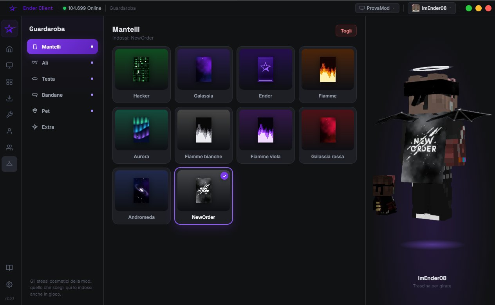
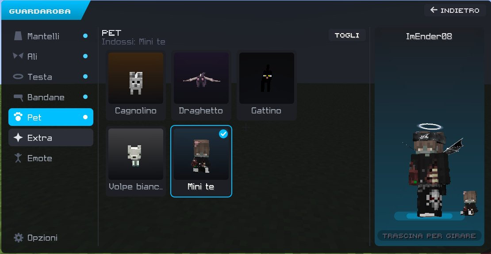

Guardaroba
Vestiti come vuoi.
Vestiti come vuoi.
E fatti vedere.
Mantelli animati, ali che battono, aureole, bandane, pet che ti seguono ed extra attorno al corpo. Quello che indossi lo vedono anche gli altri giocatori con Ender Client.
- 36 cosmetici, tutti gratis per ora
- Set NewOrder: galassia bianca col logo
- Mini te, un peluche con la tua skin
- Anche nel launcher, con l'anteprima 3D

